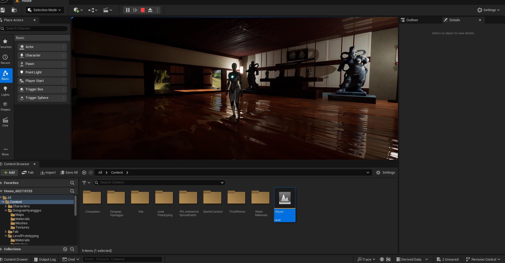
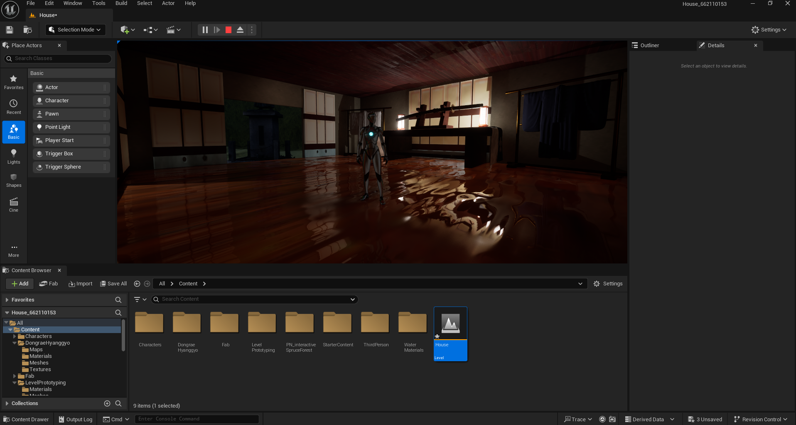
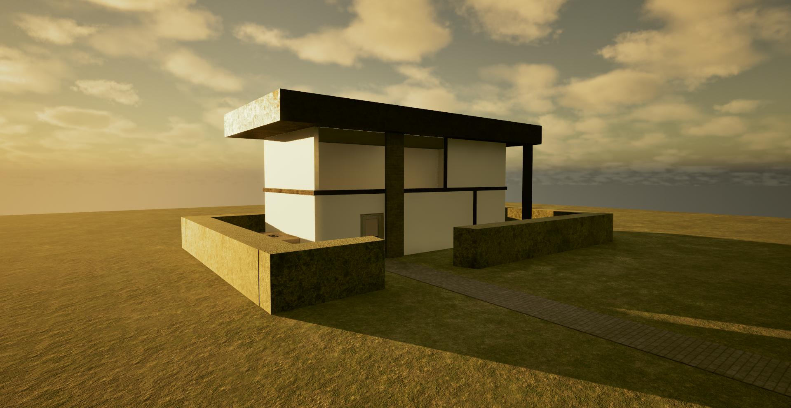
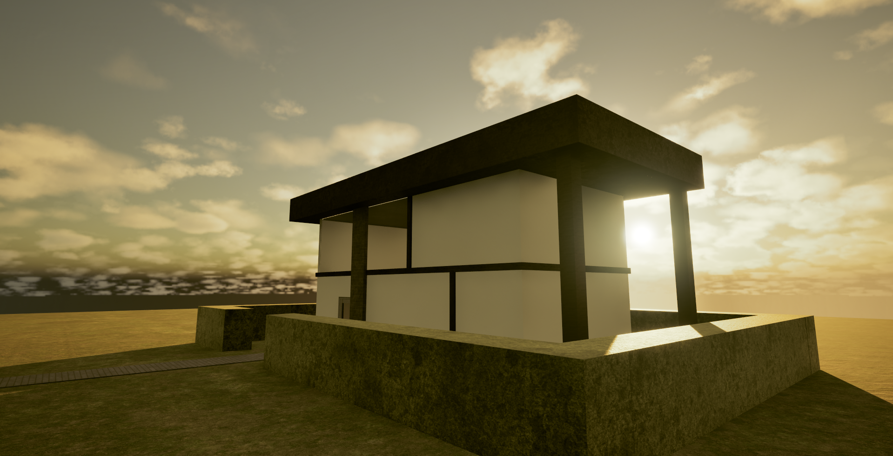
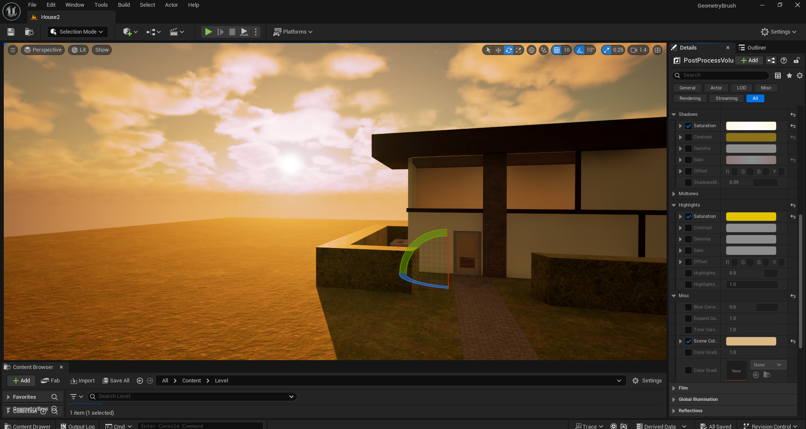
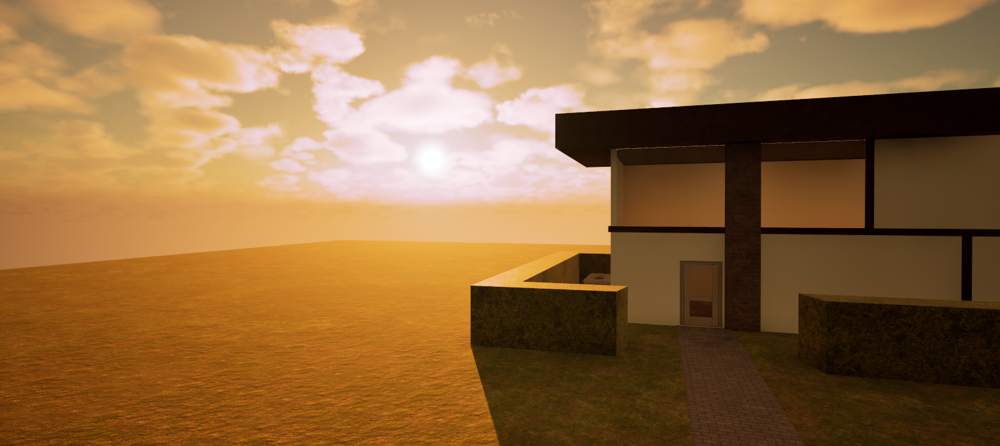

Indoor & PostProcess Design
เลือกใช้ Material และ Asset พื้นฐานคุณภาพสูงจากแพลตฟอร์ม Fab เพื่อความรวดเร็วในกระบวนการทำงานโดยนำมาปรับตั้งค่า Parameter ย่อยต่างๆ เช่น ค่าการสะท้อน และ Normal Map ภายใน Material Instance เพื่อให้พื้นผิวตอบสนองต่อการจัดแสง ของฉากได้อย่างสมบูรณ์แบบและตรงกับ Art Direction ที่วางไว้

มีพื้นฐาน Postprocess Volume ในการใช้สี และปรับโทนสีเพื่อสร้างบรรยากาศ ตัวอย่างรูปภาพมีการใช้สีโทนร้อน เช่น สีเหลือง, น้ำตาล ให้ความรู้สึกเหมือนตอนพระอาทิตย์กำลังจะตก

การนำไปใช้กับ Environment Design
• ใช้ Post Process เพื่อ กำหนด identity ของ scene
• ออกแบบ environment โดย เวลา และ อารมณ์ตั้งแต่ต้น
• คุมโทนสีให้ทั้ง scene ไปในทิศทางเดียว

Landscape & Dynamic Lighting
สร้างพื้นที่ภูมิประเทศด้วย Landscape Tool และจัดวาง Layout เบื้องต้น Block-out โดยคำนึงถึงทิศทางการนำสายตา Leading Lines และมิติความลึก Depth ขององค์ประกอบฉาก เช่น เสาโทริอิและต้นไม้ เพื่อเตรียมความพร้อมสำหรับงาน Virtual Production

จัดแสงแบบ Dynamic Lighting Directional Light & SkyLight เพื่อเน้นรูปทรง Silhouette และสร้างเงาตกกระทบที่สมจริง ควบคุม Mood & Tone ของภาพรวมระดับภาพยนตร์ผ่าน Post-Process Volume เช่น การคุม Exposure, การปรับ Color Grading และสมดุลแสงจ้า Bloom

เปิดใช้งานระบบ Nanite สำหรับโมเดลที่มีความละเอียดสูง เช่น กลุ่มต้นไม้ประดับฉาก เพื่อให้ฉากสามารถเรนเดอร์ได้อย่างรวดเร็วและรักษา Framerate ให้ลื่นไหลแบบ Real-time
